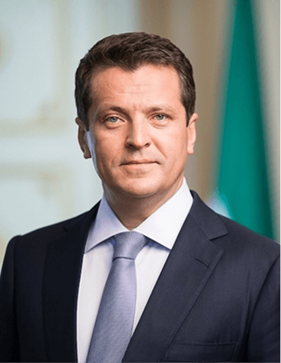
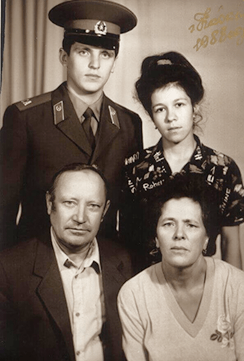
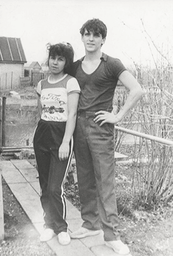
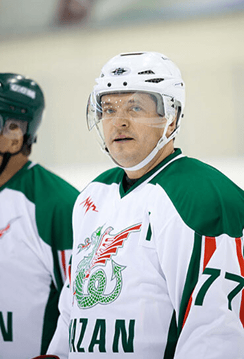
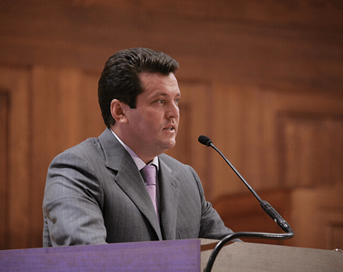
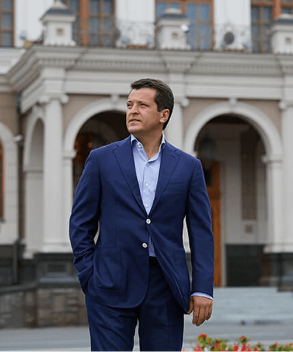

Ильсур Метшин окончил юридический факультет Казанского государственного университета, продолжил обучение в аспирантуре и имеет ученую степень кандидата юридических наук
Его профессиональная деятельность связана с муниципальным управлением Казани и Нижнекамска, а многолетняя работа отмечена государственными и республиканскими наградами
Детство, студенческие годы, служба в армии
Ильсур Метшин родился 24 апреля 1969 года в Нижнекамске в семье инженера и медсестры. С ранних лет он рос в атмосфере уважения к труду, семейным традициям и родному языку.
Каждая семья придерживается тех традиций и устоев, которые идут от родителей, от дедов, прадедов, — не больше и не меньше. Мы разговариваем на родном языке, мы воспитываем наших детей так, как когда-то воспитывали нас наши собственные родители.
У него два старших брата — Айдар и Айрат. Учился будущий Мэр Казани в нижнекамской средней школе № 11. Школьные годы в Нижнекамске оставили у него светлые воспоминания о дружбе, учителях, дворовом спорте и первых серьезных жизненных чувствах.
Детство у меня было абсолютно счастливое: замечательные учителя, футбол и хоккей в школьном дворе, вкуснейшие рыбные котлеты в столовой, друзья-одноклассники и первая любовь, которая стала любовью на всю жизнь. Но главное, что я вынес из школы — понимание ценности дружбы и умение защищать честь класса, команды.

В школе он мечтал стать сначала хирургом, потом — пилотом. Но, когда пришла пора определяться, выбрал для себя профессию юриста. В 1987 году Метшин поступил на юридический факультет Казанского государственного университета. В 1988 году студент юрфака был призван в ряды Советской армии.
Я тогда играл в ансамбле. Имидж музыканта требовал длинных волос. Но, когда я пошел в армию, эти волосы на глазах моей будущей жены сбрили машинкой. У парка Горького была парикмахерская. Вжик — и копна упала…
После армии Ильсур Метшин вернулся в университет. После успешного окончания вуза в 1992 году он поступил в аспирантуру, в 1999 году защитил диссертацию в Москве.
Главное, чему нас учили преподаватели, — постоянное саморазвитие и умение выстраивать отношения с людьми. Это те навыки, которые остались на всю жизнь, и я безмерно благодарен за это моим университетским учителям.
Семья
Основой благополучия Ильсур Метшин считает крепкие семейные узы, бережное отношение к детям, уважение к старшему поколению и приверженность здоровому образу жизни.
Счастье… оно в твоем доме, его можно вот так подержать в ладонях, и для этого не надо быть большим начальником.

Со своей будущей супругой Гульнарой он познакомился еще в детстве, когда ее семья переехала из Казани в развивающийся Нижнекамск.
Из воспоминаний Ильсура Метшина:
Впервые я ее увидел, когда был в шестом классе. Тогда я ей был ровно по плечо, она была на голову выше. А подружились мы чуть позже, в пионерском лагере «Чайка».
Из воспоминаний Гульнары Метшиной:
Мы учились в соседних школах, а жили в одном районе Нижнекамска. Он был очень популярный, активный, он был такой красивый, играл на гитаре, песни пел, занимался хоккеем, футболом, был секретарем комсомольской организации, его знали все. И очень интересный был. Я поняла, что с этим человеком хочу быть рядом, хочу идти с ним по жизни. Рядом с ним уже тогда я чувствовала себя, как за каменной стеной.
Свадьба состоялась в мае 1989 года. Сегодня супруги воспитывают четверых детей: сыновей Тимура, Тагира и Радмира, и дочь Алию.
Я очень привязан к семье. Мы вместе завтракаем, ужинаем, вместе проводим выходные — это закон.
Увлечения и хобби

С юношеских лет Ильсур Метшин увлекается командными видами спорта, отдавая предпочтение хоккею и футболу. В свое время он выступал за молодежную хоккейную сборную Нижнекамска, а позже долгое время выводил на лед команду ветеранов.
Для меня это отдушина. Погоняешь часа полтора в хоккей, и снова готов идти дальше.
Особое место в его жизни занимает музыка, интерес к которой сформировался еще в школьные годы.
Я помню, как в 1983 году в Казань приезжала популярная тогда группа. Я тогда был еще школьником, жил в Нижнекамске. Билет до Казани стоил 5,5 рублей, билет на концерт 3,5 рубля. Для того чтобы на него попасть, я месяц работал на молочном комбинате и получил за это 6 рублей. Оставшуюся сумму мне добавили родители. Я приехал в Казань и думал, что на тот момент счастливее меня человека нет на всем свете!
Муниципальная служба

Профессиональный путь Ильсура Метшина неразрывно связан с муниципальным управлением. Его карьера началась в 1993 году в администрации Советского района Казани, где спустя два года он занял должность руководителя аппарата.
В 1997 году он был назначен первым заместителем главы администрации Вахитовского района и префектом территории «Казанский посад».
С 1998 по 2005 год он возглавлял администрацию Нижнекамска и Нижнекамского района. Главным приоритетом его работы стало повышение качества жизни горожан, при этом подавляющая часть бюджета направлялась на социальные нужды. В результате Нижнекамск дважды признавался самым благоустроенным городом России и первым из нестоличных центров получил статус культурной столицы Приволжского федерального округа.
Осенью 2005 года Ильсур Метшин возглавил администрацию Казани, в начале 2006 года стал руководителем Исполкома, а в марте был избран мэром города. Казанцы доверяли ему руководство муниципалитетом четыре срока подряд: он переизбирался в 2010, 2015 и 2020 годах. За этот период столица Татарстана продемонстрировала значительный градостроительный рост, став одним из самых комфортных мегаполисов страны и обретя широкую международную известность.
Люди не разделяют власть на федеральную, республиканскую и муниципальную. Просыпаясь, всем хочется включить свет и воду, выйти в чистый подъезд и двор, видеть красивую архитектуру. Озеленение, своевременный вывоз мусора, качественное питание детей в школах — все это и многое другое в нашей зоне ответственности. Мы отвечаем за все, происходящее в Казани.
На международной арене мэр Казани принимает участие в работе крупных организаций, среди которых Лига исторических городов, Всемирная ассоциация Metropolis и Организация городов Всемирного наследия. С 2016 по 2022 год он представлял Россию в Конгрессе местных и региональных властей Совета Европы.

Кроме того, Ильсур Метшин занимает руководящие посты в российских и международных объединениях: он является ассоциированным вице-президентом Союза российских городов, входит в руководство партии «Единая Россия» и президиум Совета муниципальных образований Республики Татарстан.
С 2006 года он возглавляет Евразийское региональное отделение ОГМВ, а в 2021–2022 годах был президентом этой организации. В 2019 и 2022 годах избирался президентом Консультативного комитета ООН по вопросам местного самоуправления (UNACLA), а с 2024 года председательствует в Ассоциации городов и муниципалитетов стран БРИКС+.